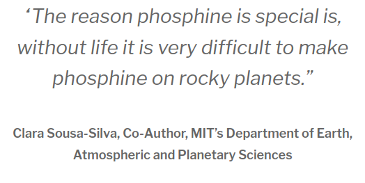
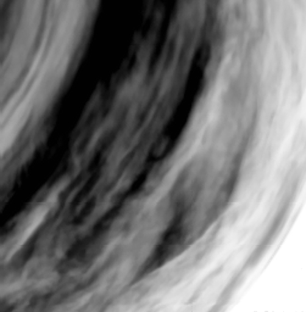
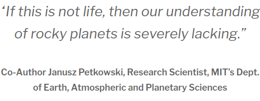
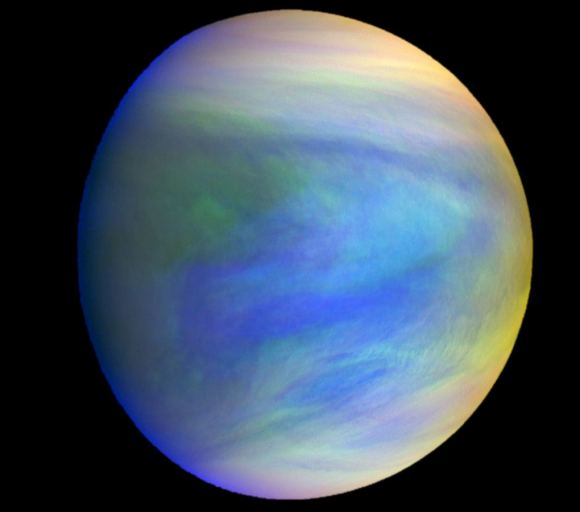

15/8/2020
Did Scientists Just Find Signs of Life on Venus ?
A team of scientists has just published a paper announcing their discovery of a peculiar chemical in the cloudtops of Venus.As far as scientists can tell, this chemical, called phosphine, could only be produced by living processes on a planet like Venus.So the whole internet is jumping on this story.
But did they find signs of life? Or is there another explanation?.
Decades ago, scientists and script writers wondered about life on Venus. No spacecraft had visited, and we couldn’t see through the thick, hazy atmosphere, so imaginations were unfettered. Almost anything could be going on down there, out of sight. Once spacecraft started visiting in the early 1960s, however, it became clear that life on Venus was unlikely. Venus was revealed as a blistering hot hellhole, with a toxic atmosphere and crushing pressure.
But the thinking behind life on Venus didn’t disappear completely. In recent times, scientists have wondered if simple life might survive in Venus’ unusually cloudy atmosphere. Extremophiles, the thinking goes, might be able to survive in the acidic upper parts of the planet’s atmosphere, where temperatures were cooler than the 462 degree Celsius (864 F) surface temperatures. In those upper layers, the pressure and temperature is similar to Earth’s.
That’s where the discovery of phosphine (PH3) in the clouds comes in.
The new study announcing this discovery is titled “Phosphine gas in the cloud decks of Venus.”It’s published in the journal Nature Astronomy, and the lead author is Jane Greaves of Cardiff University. Other authors come from MIT, Cambridge, and a handful of other research institutions around the world.
First of all, the discovery of phosphine is not direct evidence of life. Phosphine is a possible biomarker. That means we know that it can be produced by microorganisms. Here on Earth, it’s produced by organisms on decaying organic matter, and phosphine is a regular constituent of the atmosphere. As far as scientists know, phosphine is either produced by life, or by chemical processes that require an enormous amount of energy.
Phosphine has also been found in Jupiter’s atmosphere. On a gas giant like Jupiter, there’s enough energy for phosphine to form abiotically. Deep in the atmosphere, extreme temperature and pressure can create phosphine, and currents can dredge it up high into the atmosphere. But on a lifeless, rocky world like Venus,phosphine is not supposed to be there. It should be oxidized, and there just isn’t enough energy there to produce it.
So its presence in Venus’ atmosphere has caught everyone’s attention.
The team is very confident that they’ve found phosphine. In their paper they write “We are unable to find another chemical species besides PH3 that can explain the observed features. We conclude that the candidate detection of PH3 is robust…”.
They made an exhaustive analysis of their findings, trying to come up with some way that Venus’ phosphine could be explained without a living source. In their paper they write that “The presence of PH3 is unexplained after exhaustive study of steady-state chemistry and photochemical pathways, with no currently known abiotic production routes in Venus’s atmosphere, clouds, surface and subsurface, or from lightning, volcanic or meteoritic delivery.”
The team is hoping that other scientists can find an explanation.
“It’s very hard to prove a negative,” says Clara Sousa-Silva, research scientist in MIT’s Department of Earth, Atmospheric and Planetary Sciences (EAPS). “Now, astronomers will think of all the ways to justify phosphine without life, and I welcome that. Please do, because we are at the end of our possibilities to show abiotic processes that can make phosphine.”
The phospine has to either come from life, or there’s a chemical process at work that scientists don’t know about yet.
“This means either this is life, or it’s some sort of physical or chemical process that we do not expect to happen on rocky planets,” adds co-author and EAPS Research Scientist Janusz Petkowski.
The location of the phosphine is part of what’s piqued everyone’s interest.
Venus’ atmosphere is hot, dense, toxic, and extremely acidic. It can be a billion times more acidic than Earth, stretching the definition of what we would call an extreme environment for life. “Venus is a very challenging environment for life of any kind,” Seager says.
But there’s one region, high in Venus’ atmosphere, where things are different.
Between about 48 and 60 km (30 and 37 miles) above the surface, the temperature isn’t so lethal. At that altitude, the temperature ranges from -1 C to 93 C (30 to 200 degrees F). It’s very controversial, but some scientists have wondered if life could survive there. And that’s where this team of researchers found the phosphine.
“This phosphine signal is perfectly positioned where others have conjectured the area could be habitable,” Petkowski says.
Greaves and her team made the initial phosphine detection with the James Clerk Maxwell Telescope in Hawaii. They were looking for unexpected molecules in Venus’ atmosphere that might be signals for life. Then they contacted Sousa-Silva, who is an expert in phosphine.
Sousa-Silva is interested in phosphine because it’s a biosignature. But she expected to be looking on distant exoplanets for the molecule, as part of the overall scientific effort to identify life elsewhere in the galaxy.
“I was thinking really far, many parsecs away, and really not thinking literally the nearest planet to us,” Sousa-Silva said in a press release.
The team wanted more confirmation for their finding, so they turned to the European Southern Observatory’s ALMA (Atacama Large Millimeter/sub-millimeter Array). It has greater sensitivity than the James Clerk Maxwell Telescope (JCMT), which made the initial finding. ALMA observations confirmed what the team had found:a pattern of light that matched what phosphine gas would emit within Venus’ clouds.

With their ALMA and JCMT data, they turned to a model of Venus’ atmosphere to help make sense of it. That model was developed by Hideo Sagawa of Kyoto Sangyo University. Sagawa is also a co-author of the new study.
The results of that showed that phosphine was a very minor part of Venus’ atmosphere, at a concentration of only 20 ppb (parts per billion.) Though that’s an extremely tiny fraction, in Earth’s atmosphere, where the only source is biological, the concentration can be even lower.
Then the team got busy trying to fit their findings with everything that scientists know about Venus. They explored all the pathways that could explain the presence of phosphine without life. They considered a whole host of possibilities involving sunlight, surface minerals, volcanic activity, a meteor strike, and lightning.
“We really went through all possible pathways that could produce phosphine on a rocky planet,” Petkowski says. “If this is not life, then our understanding of rocky planets is severely lacking.”
If life is behind this phosphine, then that life is in a tough spot. It’s trapped in Venus’ temperate cloud deck, way above the planet’s hellish surface. How did it get there?
Scientists think that Venus may have been habitable billions of years ago. It may even have had oceans. It may even have been the first habitable planet in our Solar System. It’s possible that any life living in the clouds is a descendant of ancient surface life, just like remnants of Earth’s early life are surviving in oxygen poor muds, banished by the changing conditions.
“A long time ago, Venus is thought to have oceans, and was probably habitable like Earth,” Sousa-Silva says. “As Venus became less hospitable, life would have had to adapt, and they could now be in this narrow envelope of the atmosphere where they can still survive. This could show that even a planet at the edge of the habitable zone could have an atmosphere with a local aerial habitable envelope.”
t would be a strange form of life that could exist in Venus’ clouds. It would have to perpetually reproduce. And it would have to use a liquid other than water for its cellular functions. “You can, in principle, have a life cycle that keeps life in the clouds perpetually,” says Petkowski, who envisions any aerial Venusian life to be fundamentally different from life on Earth. “The liquid medium on Venus is not water, as it is on Earth.”
The team intends to follow up these results with more research. They want to use other telescopes to try and map out the phosphine, and to see if it comes and goes in daily or seasonal cycles, which might suggest that life is behind it.
This isn’t the first time that scientists have found potential signs of life in the Venusian atmosphere. But most chemical signs of life can be produced by non-living processes, too. Phosphine is different.

“Technically, biomolecules have been found in Venus’ atmosphere before, but these molecules are also associated with a thousand things other than life,” Sousa-Silva says. “The reason phosphine is special is, without life it is very difficult to make phosphine on rocky planets. Earth has been the only terrestrial planet where we have found phosphine, because there is life here. Until now.”
So that’s where it stands for now. There are plenty of headlines out there saying, or at least implying, that scientists have found signs of life on Venus. But it’s a little more nuanced than that.
While phosphine can be a sign of life, it can also not be one. The truth is we just don’t know yet. As co-author Sousa-Silva says, “It’s very hard to prove a negative.” And as we get better and better at studying other planets and moons, we’re finding a bewildering variety of physical and chemical processes and outcomes.
This could be, and probably is, one of those.
It’s intriguing to think what it’ll look like if we ever do find life elsewhere. The Hollywood/Sci-Fi version of that often involves the sudden appearance of a technologically advanced alien race, their enormous ships hovering menacingly over Earth’s cities. Or a brave team of explorers/scientists investigating some distant world suffers death by xenomorphic parasitic reproduction.
But in reality, it might look more like this. A tiny chemical signal, faint at first, then verified by stages. Just a single type of unlikely molecule, lurking where it shoudn’t be. Unexpected and persistent.